Arabian
cowrie
Mauritia arabica
Family Cypraeidae
updated
Jul 2020
Where
seen? This
amazing snail is among the large cowries sometimes seen near reefs
on our Southern shores. It is more active at night. It was previously
known as Cypraea arabica.
Features: 5-8cm.
Shell
egg-shaped,
generally bluish with pattern of fine dotted brown lines, but patterns vary. Underside pale beige to light orange with brown spots and brown or orange 'teeth'. The living animal has a mantle covered with fine white 'hairs'. Siphon and tentacles black. So far, we have not encountered a living animal with the mantle covering the entire shell. |
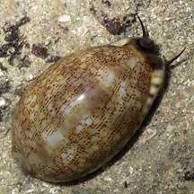
Labrador, Jun 05 |
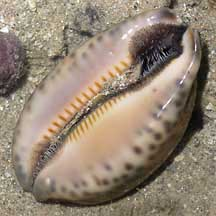
'Teeth' brown or orange. |
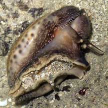
Animal emerging
from shell. |
| Human uses: It is collected for
food by coastal dwellers and the shell is used for shellcraft and
for the shell trade. |
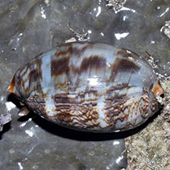
East Coast Park, Jul 20
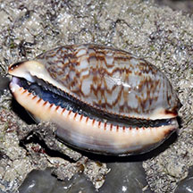
Juvenile.
Photo shared by Loh Kok Sheng on facebook. |
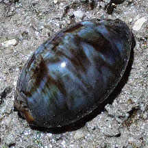
St John's Island, Oct 25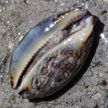
Juvenile.
Photo shared by Richard Kuah on facebook. |
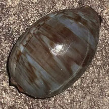
East Coast Park (B), Nov 25
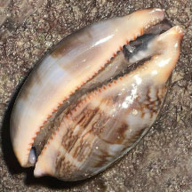
Juvenile.
Photo
shared by Loh Kok Sheng on facebook. |
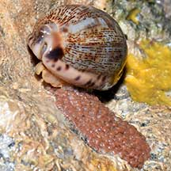
Laying eggs!
East Coast Park (PCN), Nov 21
Photo shared by Loh Kok Sheng on facebook |
|
|
| Status and threats: It is listed
as 'Vulnerable' on the Red List of threatened animals of Singapore,
due to habitat loss and overcollection. According to the Singapore
Red Data Book: although "specimens can still be found they are
much less abundant than in the 1960's." |
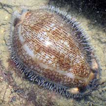
Tanah Merah,
Oct 09 |
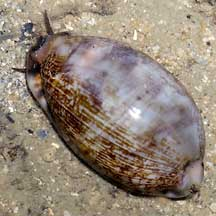
Kusu Island, May 05 |
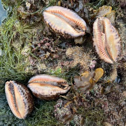
Several small ones (4cm) seen on one rock.
Pulau Jong, Aug 25
Photo
shared by Kelvin Yong on facebook. |
| Arabian
cowries on Singapore shores |
| Other sightings on Singapore shores |
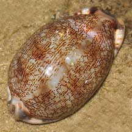
Tanah Merah, Jul 09
|
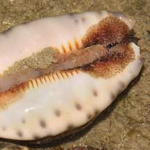
Photo shared byJames Koh on his
blog. |
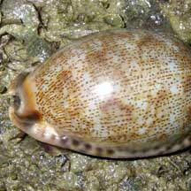
Tanah Merah, Jul 09
Photo shared by Toh Chay Hoon on her
blog. |
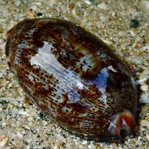
East Coast Sailing Centre, May 21
Photo shared by Toh Chay Hoon on facebook. |
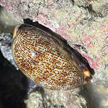
East Coast Sailing Centre, May 24
Photo shared by Kelvin Yong on facebook. |
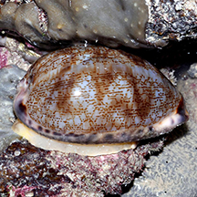
East Coast Park (B), Jun 15
Photo shared by Loh Kok Sheng on facebook.
|
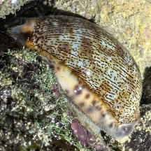
Labrador, Oct 25
Photo shared by Lon Voon Ong on facebook. |
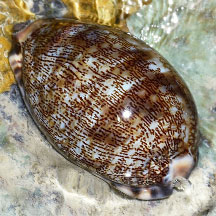
Sentosa Tg Rimau, Oct 25
Photo shared by Loh Kok Sheng on facebook. |
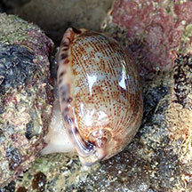
Sentosa Serapong, Apr 19
Photo shared by Liz Lim on facebook. |
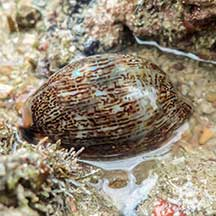
Pulau Tekukor, Mar 22
Photo shared by Vincent Choo on facebook. |
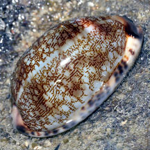
Seringat-Kias mangrove lagoon, Sep 25
Photo shared by Loh Kok Sheng on facebook. |
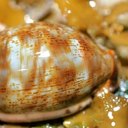
Seringat Kias, Apr 12
Photo shared by Russel Low on facebook. |
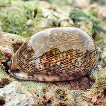
Terumbu Selegie, May 24
Photo shared by Vincent Choo on facebook. |
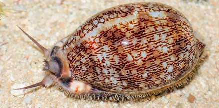
St. John's Island, Apr 21
Photo shared by James Koh on flickr. |
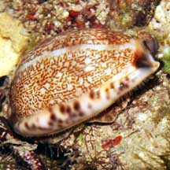
Sisters Island, Aug 09
Photo shared by Liana Tang on her
blog. |
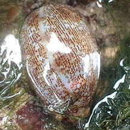
Big Sisters Island, Jan 23
Photo shared by Tammy Lim on facebook. |
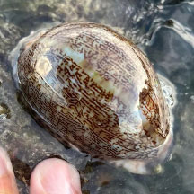
Pulau Jong, May 24
Photo shared by Kelvin Yong on facebook. |
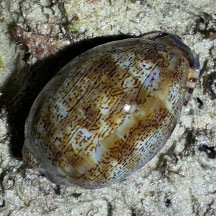
Cyrene, Jul 25
Photo shared by Tammy Lim on facebook. |
|
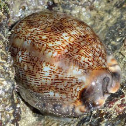
South Cyrene, Oct 10
Photo shared by Loh Kok Sheng on flickr. |
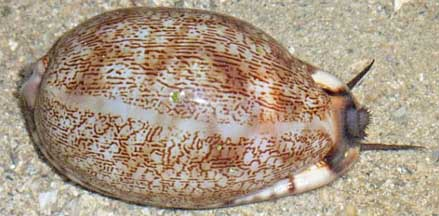
Pulau Hantu, Jun 10
Photo shared by Loh Kok Sheng on his
blog. |
|
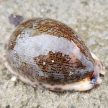
Pulau Semakau (South), Nov 24
Photo shared by Che Cheng Neo on facebook. |
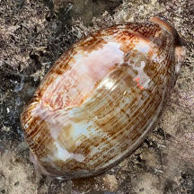
Terumbu Raya, Jul 25
Photo shared by Kelvin Yong on facebook. |
|
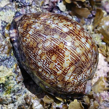
Beting Bemban Besar, May 24
Photo shared by Richard Kuah on facebook. |
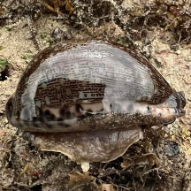
Terumbu Bemban, Apr 24
Photo shared by Kelvin Yong on facebook. |
|
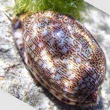
Terumbu Pempang Tengah, May 22
Photo shared by Richard Kuah on facebook. |
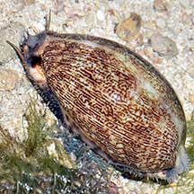
Pulau Salu, Apr 21
Photo shared by Loh Kok Sheng on facebook. |
|
|
Links
References
- Tan Siong
Kiat and Henrietta P. M. Woo, 2010 Preliminary
Checklist of The Molluscs of Singapore (pdf), Raffles
Museum of Biodiversity Research, National University of Singapore.
- Tan, K. S.
& L. M. Chou, 2000. A
Guide to the Common Seashells of Singapore. Singapore
Science Centre. 160 pp.
- Abbott, R.
Tucker, 1991. Seashells
of South East Asia.
Graham Brash, Singapore. 145 pp.
- Davison,
G.W. H. and P. K. L. Ng and Ho Hua Chew, 2008. The Singapore
Red Data Book: Threatened plants and animals of Singapore.
Nature Society (Singapore). 285 pp.
- Kuiter, Rudie
H and Helmut Debelius. 2009. World
Atlas of Marine Fauna. IKAN-Unterwasserachiv. 723pp.
|
|
|